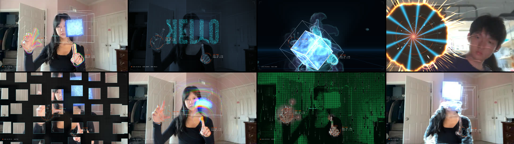

Everything for the night
On the wall
The Big Wall plays everything below in one loop. Each piece also plays on its own: films loop in a fullscreen player here, and slide walls open in their own page and run by themselves. F goes fullscreen, Esc leaves.
Sound
Further and the slide walls are silent, so the room's sound comes from the playlist. Six Facts has its own music; on the Big Wall it starts muted.
For the guests
A live camera for the guests: eight effects that went viral on X, rebuilt in one page and played with the hands. Nothing is filmed or uploaded; the camera stays in the browser.

Keys 1–8, or party mode
The party app: guests tap their NFC pass, give a name and birthday, meet their Kin, a zodiac creature, then tap each other's passes to fill their orbit.
The research
What the wall is made from: the books, the tweets, the films and the effects, each with its sources.